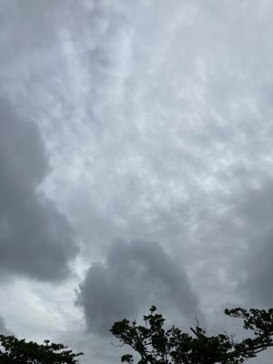
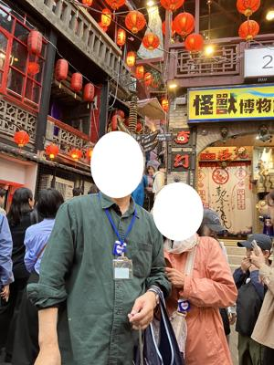

うるがいの話 ある日
最新: カンボジア【うるがいの話 ある日】とは 一日だけのプログです
『うるがいの話』の最新一日だけのプログで、通信料が少なく経済的だ。カニの画像をクリックすると全ての日付が載る『うるがいの話』サイトを表示します
|
|
【うるがいの話】 うるがい(ｳﾙｶﾞｲ urugai)とは、『もずくがに』の名前でとても大きくなります。 |
|---|---|
|
|
【カミマヤーの話】 猫のことを方言でマヤーといいます。カミマヤー（kamimayaa）とは、神の猫のことです。 |
|
【たながぁの音楽】 たながぁ（ﾀﾅｶﾞｰ tanagaa）とは手長えびのことで、何種類かあり大きいのは車 エビぐらいになります。 |

|
【ぶながぁの話】 ぶながぁ(ﾌﾞﾅｶﾞｰ bunagaa)とは、赤い髪の毛、赤い身体、そして身長は１ｍ２０ｃｍ ぐらい、川の蟹を食べているの目撃された。場所は沖縄県国頭郡大宜味村のと ある村僕の隣近所に住んでいる爺さんから、聞いた話です。 |
|
|
【ギーマの話】 ギーマ(giima)とは、山原の里山に咲くスズランに似た、 花を付けます。実は食べられます、 気が付くと口の周りが紫になっています。 |
2025年06月03日 (火）カンボジア
16:58

コドモが、子供の友達に『カンボジアで、ぼったくりにあった』と
いうと、『カンボジア？』通じなかった。日本での入籍を、昨日済
ませたのでコドモとの紹介も兼ねて、私の家に夜集合した。そして
台湾旅行で十分で、知らない現地のオジィーが、写真を撮ってくれ
ると言ったので、何の疑いもなく私はスマホを渡し、オジィーは撮
ってくれた。あとで、ヨメがよくスマホを渡したよねと怒られた。
と、言ったらコドモが、カンボジアで写真を撮りますよと言われ、
現地の人にスマホを渡したら数枚撮ったらあと、百ドルを要求され
た！と言われたと、最終的には払わなかったらしいが。
オジィーが撮ったら写真

コドモの台湾でビジネスを展開したいと、今、中国語を勉強してい
ると、簡単な単語を披露したが・・・・、發音がネ。私は、子供を
よろしくお願いしますと、ＣｈａｔＧＰＴとユーチューブで調べ喋
ると、バッチリ通じました（喜んでいたゼ）。
今の戸籍の制度では、日本人と外国人が結婚した場合、国籍の欄に
は、原則、国名を書くことになっています。
法務省は、ことし５月から改正戸籍法が施行されるのにあわせて関
係する省令を改正し、国籍欄に地域名も記載できるようにする方針
です。
これにより、台湾出身の人が、この欄に「台湾」と書くことなどが
可能となります。
子供の友達は、以前だと「中国」だったが、「台湾」と書くことが
、出来たと喜んでいた。また台湾での婚姻届は７月１日を予定して
いると言っていた。
私からのご祝儀袋には１６万円、コドモは２万円だった。
当初は２０万円だったが、ヨメが元に換算すると４になる。よくな
い、１８万円では１８は台湾では縁起が良くないと結果１６万円に
なった。結婚式は来年らしい、その時は友達の家族と少し話せるよ
うに第二外国語を勉強スべ。